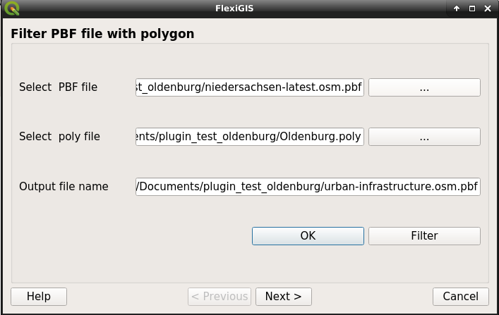
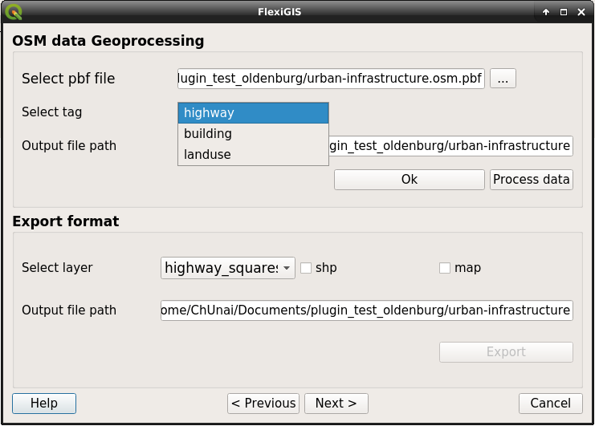
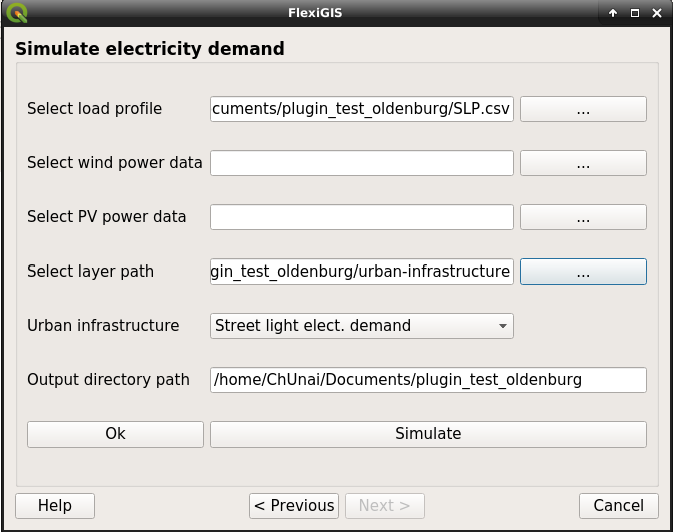

FlexiGIS’s QGIS plugin documentation.¶
A QGIS GUI interface for interactive simulation of urban infrastructure electricty demand.
- Author
Alaa Alhamwi <alaa.alhamwi@dlr.de>, Chinonso Unaichi <chinonso.unaichi@dlr.de>
- Organization
DLR - Institute of Networked Energy Systems, Department of Energy Systems Analysis
Getting started¶
- Installation
The FlexiGIS plugin can be downloaded from the QGIS plugin repository through the plugin manager in the QGIS desktop.

- Dependencies
QGIS 3.04 and 3.10
Python >=3.5
pandas
Gdal (ogr)
OSMfilter
Osmosis
- Setting up plugin environment
Before running the FlexiGIS plugin from the QGIS desktop environment, ensure all input data are accessible from one folder i.e, create a new folder containing input files such as
downloaded OSM pbf file of the urban loaction of interest
poly file of area interest from the pbf file
standard load profile for the simulation of electricity demand as csv
RES (wind and solar power) files as csv
User Guide¶
After setting up your environment and installation of the FlexiGIS plugin, the plugin icon can be located on the QGIS menu bar. The plugin has three different windows that can be used to execute the three main FlexiGIS functuionalities.
Filter OSM data
OSM data geoprocessing
Simulation of urban infrastructure electricity demand
Filter OSM data¶
{kind=link}
This window allows for the extraction of an area (e.g. City: extratction of Oldenburg osm.pbf from Niedersachsen osm.pbf file) of interest from a osm.pbf file, using the polygon file of that area. From the window above
First select the osm.pbf file, then the polygon file of the area of interest.
click the ‘ok’ button to activate the ‘Filter’ button.
Note
Notice an output file path is generated automatically ‘Output filename’, this is the output file name.
OSM data geoprocessing¶
This window is made up of two sections, the first section further process the output osm.pbf file from the ‘Filter pbf file’ window above. The second section allow user to export the out files (defaults as csv files) to shapefiles or visualize directly in the QGIS desktop as maps.
{kind=link}
select the filtered osm.pbf file generated from the first window
choose the Urban infrastructure tag you want to process from the the pbf file
click ‘Ok’ to activate the process button
Note
Notice an output directory path is generated automatically ‘Output file path’, this is where all output files are stored.
select the generated output layer you would like to export to other format
check the box ‘shp’ to export output csv file to shapefile or ‘map’ to generate a mape on the QGIS desktop
Simulation of urban infrastructure electricity demand¶
{kind=link}
Select the standard load profile csv file
wind power csv file
PV power csv file
Select the directory path where the generated layers are stored ( this is the output path from window 2)
click ‘ok’ to activate the ‘Simulate’ button.
The result is a csv file containing time series of the electricity demand of the selected urban infrastructures. For more information on FlexiGIS, jump to the documentation here.
License¶
The FlexiGIS is licensed under the BSD-3-Clause, “New BSD License” or “Modified BSD License”. Redistribution and use in source and binary forms, with or without modification, are permitted. For more information concerning the BSD-3C and the description of the terms under which you can use the FlexiGIS code, please see opensource licenses.